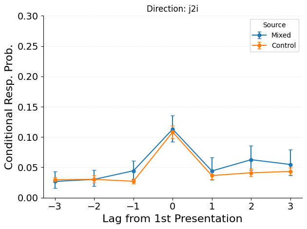
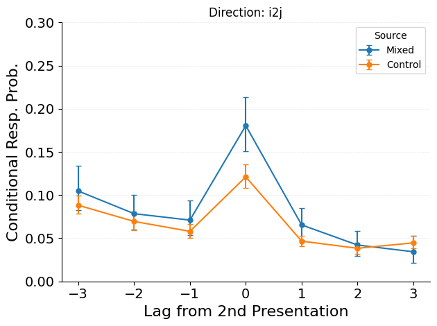
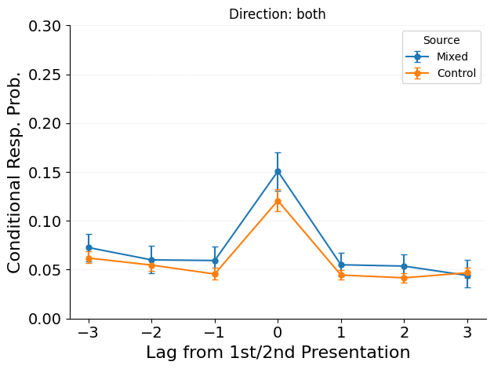

Examine transitions between neighbors of different presentations of repeated items.
The repetition-neighbor CRP analysis examines transitions between items studied near different presentations of the same repeated item. For a repeated item at positions \(i\) and \(j\), the analysis tracks transitions from \(j\)’s neighbors to \(i\)’s neighborhood (j2i), from \(i\)’s neighbors to \(j\)’s neighborhood (i2j), or both.
These cross-occurrence neighbor transitions test whether recalling items near one presentation of a repeated item facilitates transitions to items near the other presentation.
for direction in ["j2i", "i2j", "both"]: plot_rep_neighbor_crp( datasets=datasets, trial_masks=masks, max_lag=max_lag, min_lag=min_lag, direction=direction, use_lag2=use_lag2, contrast_name="Source", labels=["Mixed", "Control"], ) plt.title(f"Direction: {direction}")if ylim isnotNone:for ax in plt.gcf().axes: ax.set_ylim(ylim) save_figure(figure_dir, figure_str, suffix=direction)



Code
for direction in ["j2i", "i2j", "both"]: observed_crp = subject_rep_neighbor_crp( data, trial_mask, direction, use_lag2, min_lag, max_lag ) control_crp = subject_rep_neighbor_crp( control_dataset, control_mask, direction, use_lag2, min_lag, max_lag ) result = test_rep_neighbor_crp_vs_control(observed_crp, control_crp, max_lag, direction)print(f"\n{'='*70}")print(f"Statistical Test: {direction}")print(f"{'='*70}")if direction =="j2i":print("Tests whether j+1/j+2 → i-neighbors transitions are elevated vs control.")print("Significant positive effects support study-phase retrieval at P2.")elif direction =="i2j":print("Tests whether i+1/i+2 → j-neighbors transitions are elevated vs control.")print("(Control condition for asymmetric predictions.)")else:print("Tests both directions combined.")print()print(result)
Plots show transition probabilities between neighbors of different presentations. Key patterns:
Cross-occurrence facilitation: elevated transition probabilities between neighbors of different presentations indicate that recalling near one occurrence facilitates recall near the other.
Direction asymmetry: j2i vs. i2j differences reveal whether the direction of cross-occurrence transitions matters.